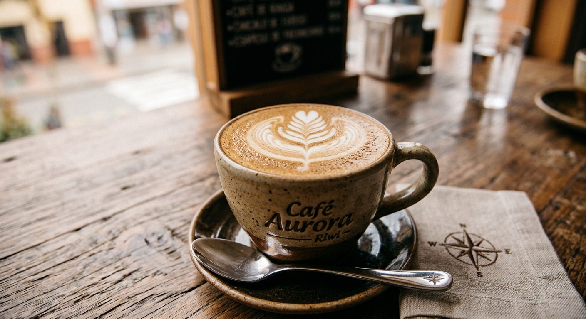
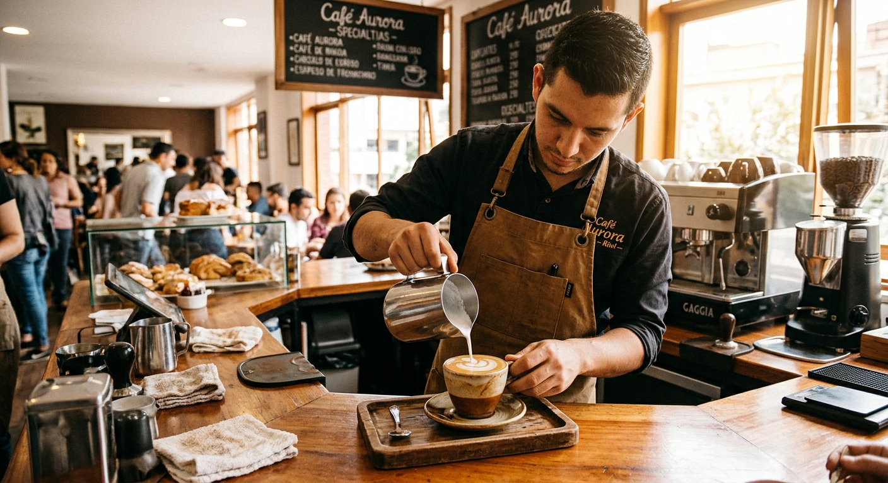
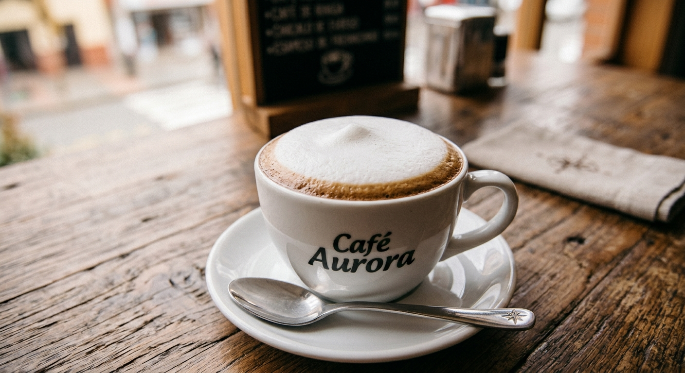
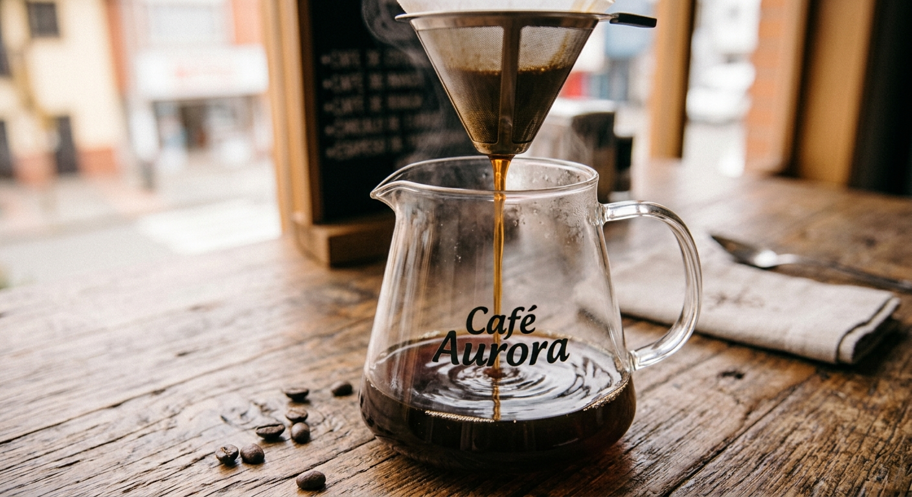

Latte de la casa

Espresso doble con leche vaporizada.
Granos seleccionados de fincas colombianas, preparados al momento para empezar bien el día.


Espresso doble con leche vaporizada.

Espresso con leche y una capa generosa de espuma.

Grano de una sola finca, preparado con método de goteo.